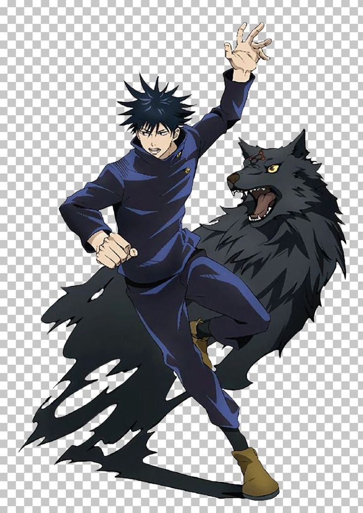

Навігація
ХарактеристикиМегуми Фушигуро (伏黒恵ふしぐろめぐみ Fushiguro Megumi?) — один из центральных персонажей Jujutsu Kaisen. Вымышленный персонаж манги, созданной Гэгэ Акутами. Он — студент первого года в Столичной технической школе магии, академии, где он становится магом и разрабатывает проклятые техники для борьбы с проклятыми духами, существами, проявляющимися из проклятой энергии из-за негативных эмоций, исходящих от людей. Он является потомком Клана Зенин, одного из главных кланов, доминирующих в мире колдовства. В начале "Магической Битвы" учитель Сатору Годзё поручает ему найти один из пальцев Сукуны, предметов, принадлежащих самому могущественному проклятому духу всех времен, что приводит к его партнерству и дружбе с Юдзи Итадори, таким же студентом первого года обучения. Мегуми — достаточно высокий, стройный парень с темными волосами и зелеными (в аниме темно-синими) глазами. У него уникально уложенные черные волосы с длинными шипами, которые торчат во все стороны вокруг его головы, напоминая морского ежа (согласно Киндзи Хакари). В средней школе Мегуми носил форму восточной средней школы Сайтама Урами, которая состояла из коричневой куртки поверх белой рубашки, черных брюк и белых кроссовок. Когда Мегуми поступил в Токийскую столичную техническую школу магии, он стал носить специальную униформу: чёрный пиджак с косым бортом и двумя пуговицами на левой стороне с длинными рукавами и высоким воротником, темные брюки до щиколотки и коричневые ботинки. При первой встрече с Мегуми, Годзё отметил сходство с его отцом Тодзи Фусигуро, а сам Мегуми имеет похожие черты лица и такие же зеленые глаза, как у его покойного отца. После арки «Разборки Синдзюку» и его разъединения с Сукуной, Мегуми приобретает три шрама на лице, соответствующие глазам воплощенной формы Сукуны: один шрам под левым глазом Мегуми и два шрама там, где были глаза «второго лица» Сукуны. [3] Мегуми поступил в школу как маг второго ранга. Потенциал к развитию в нём разглядели даже Норитоси Камо, который выразил мнение о том, что возраст Мегуми не имеет значения из-за его унаследованной техники, и что он даже более надежен, чем Наобито Зенин. Так же, Май Зенин и Сукуна. Последний примечает во время боя, что Мегуми больше сражается в ближнем бою, что выделяет его среди остальных пользователей шикигами, но скрывает его лучшие способности. Больше всего Мегуми использует физические атаки в комбинации с шикигами-помощниками. И во время сражений с помощью своих аналитических навыков и тактического мышления перехитривает своих противников, это хорошо наблюдается в Смертельной Миграции. Фушигуро хорошо работает в группе и всегда оказывался ценным активом. Его техника позволяет ему вызывать множество различных вспомогательных средств не только для себя, но и для всего его отряда. Например, его Божественные Собаки позволяют легче отслеживать цели, а Нуэ дает возможность атаковать цели в воздухе. Его ценность как члена отряда была продемонстрирована не только в Событии Доброй Воли, но и в ужасном инциденте в Сибуе. Мегуми пришлось работать вместе с другими колдунами, чтобы выжить в опасных сражениях в Сибуе. Первоначально он был назначен в команду Нанами, где он так же хорошо понимал ситуацию, как и Такума Ино, который был значительно более опытным. Годжо считает, что в Мегуми даже больше потенциала, чем в Юдзи.
| Ім'я Головного персонаж | Fushiguro Megumi |
| Раса | Человек |
| Возрасть | 16 лет |
